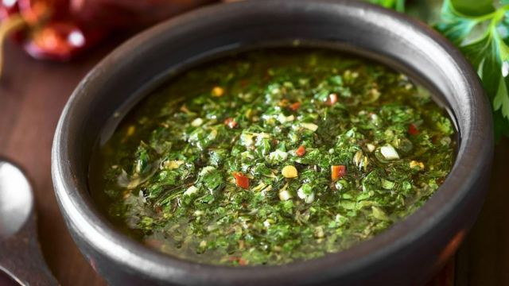

Chimichurri sauce

This famous Argentinean sauce is perfect for any grilled foods. My catering customers love this sauce on garlic crostini with grilled flank steak slices.
Ingredients
- 1 cup fresh parsley
- ¾ cup extra virgin olive oil
- 3 tablespoons red wine vinegar
- 2 tablespoons dried oregano
- 2 teaspoons ground cumin
- 1 teaspoon salt
- ½ tablespoon minced garlic
- ½ tablespoon pepper sauce
Steps
- Place the parsley, olive oil, red wine vinegar, oregano, cumin, salt, garlic and hot pepper sauce into the container of a blender or food processor. Blend for about 10 seconds on medium speed, or until ingredients are evenly blended.
Original Recipe
Back to menu